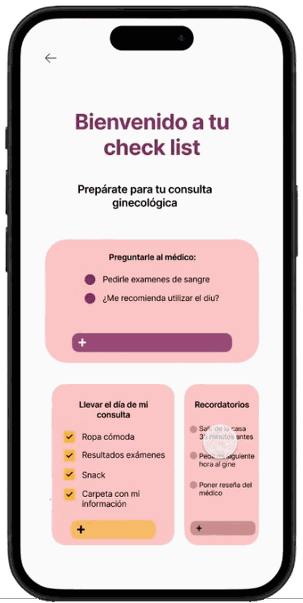
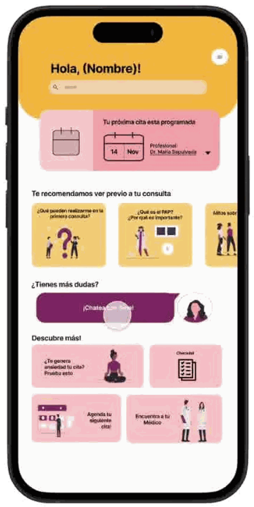
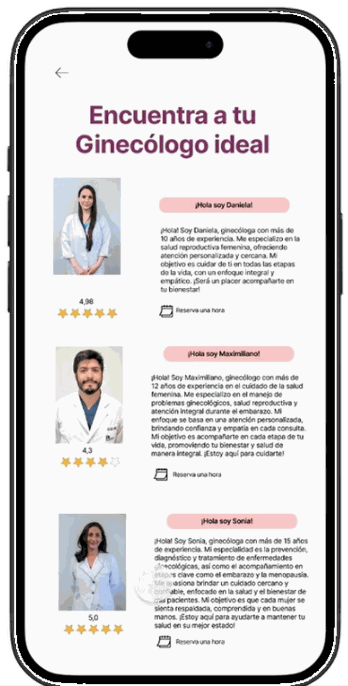
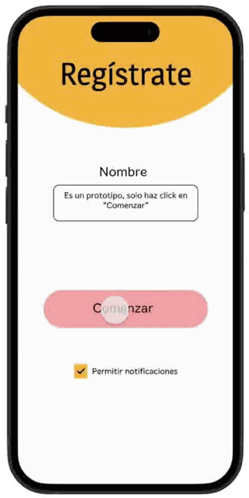
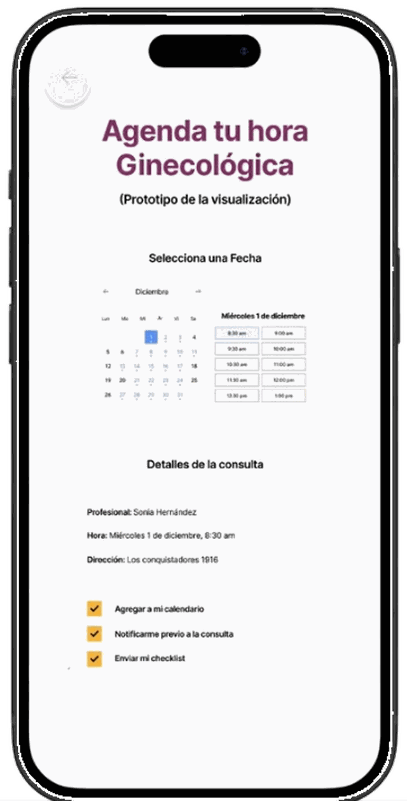

UX/UI · Investigación
Ginecología amable. Plataforma de información y acompañamiento que busca reducir el estrés y la incertidumbre antes de una consulta ginecológica. Este es un caso de estudio breve, centrado en la evidencia: investigación, definición de necesidades, prototipo y testeo. Proyecto académico y exploratorio.



01 · Desafío y contexto
¿Cómo podríamos reducir el estrés y la incertidumbre en las pacientes mediante el acceso claro, comprensible y empático a información sobre procedimientos ginecológicos?
Las visitas ginecológicas pueden ser estresantes por la falta de claridad y la dificultad para entender la información médica técnica. Muchas mujeres experimentan incertidumbre frente a procedimientos invasivos, agravada por una comunicación a veces limitada o poco empática. El proyecto parte de escuchar esa experiencia.
“Para mí es muy importante que la doctora sea amable y carismática… ir al ginecólogo no es una experiencia súper cómoda, y tener a alguien comunicativo hace la diferencia.”
Cita de investigación“Fue todo muy invasivo. Cuando me abrieron con el espéculo, en especial porque no me dijeron que lo iban a hacer.”
Cita de investigación02 · Investigación e insights principales
Combinamos una encuesta amplia con entrevistas y citas de pacientes para entender cómo se sienten al enfrentar una consulta y qué información echan de menos.
Emociones predominantes al reservar una consultaEncuesta · % de menciones · la inseguridad domina
03 · Mapa de experiencia resumido
Sintetizamos el recorrido en tres momentos. La curva emocional muestra el objetivo del diseño: acompañar desde la ansiedad inicial hacia una experiencia más informada y tranquila.
Pre-servicio
Servicio
Post-servicio
04 · Oportunidad de diseño
La formulación del proyecto ordena qué construir, por qué y para qué, guiada por cuatro atributos que debía cumplir la plataforma.
Una plataforma de información sobre procedimientos ginecológicos: clara, accesible y empática, que guía en cada paso, desde pedir la consulta hasta el post-servicio.
Porque la falta de claridad y el lenguaje técnico generan incertidumbre ante procedimientos invasivos, agravada por una comunicación poco empática.
Para empoderar a las pacientes, mejorar su bienestar mental y fomentar una cultura de autocuidado y prevención en salud ginecológica.
El núcleo del proyecto: cada decisión de diseño responde a un hallazgo concreto de la investigación y se traduce en algo tangible en la interfaz.
Hallazgo
Las pacientes sentían inseguridad por no saber qué ocurriría durante la consulta.
Decisión
Organizar la información por etapas y presentarla de forma gradual, evitando sobrecargar a la usuaria.
Aplicación
Checklist previa, explicación visual del procedimiento y recursos de preparación emocional.
Hallazgo
La comunicación médica se percibía como técnica, invasiva y poco empática.
Decisión
Usar un tono cercano y ofrecer un espacio para resolver dudas sin juicio, antes de la consulta.
Aplicación
Asistente conversacional “Ginea” con preguntas frecuentes y recordatorio de confidencialidad.
Hallazgo
El manejo de la información es lo más valorado, y funciona mejor cuando es visual y didáctica.
Decisión
Priorizar contenido visual y accionable por sobre el texto técnico extenso.
Aplicación
Tarjetas temáticas (“¿Qué es el PAP?”, “¿Qué pueden realizarme?”) y contenido “ver antes de tu consulta”.
Hallazgo
La checklist personalizable fue la herramienta mejor evaluada del prototipo (98,6%).
Decisión
Convertir la preparación en una lista accionable y recordable.
Aplicación
Checklist con preguntas al médico, qué llevar el día de la consulta y recordatorios.
05 · Flujo principal de la plataforma
El recorrido principal lleva a la usuaria, paso a paso, desde el registro hasta reservar su hora ya preparada.

Registro
Crea su perfil y define preferencias.
Inicio
Próxima cita y contenido recomendado.
Checklist
Preguntas y qué llevar a la consulta.
Buscar profesional
Elige según reseñas y afinidad.

Reserva de hora
Fecha, detalles y envío del checklist.
06 · Wireframes e iteraciones
El insight de “entregar información gradual” definió la arquitectura del inicio antes que su estética: primero la próxima cita, luego el contenido recomendado en tarjetas breves, después el chat y los accesos. La interfaz final viste esa misma estructura con un lenguaje visual cálido.
Reconstrucción esquemática de la arquitectura del inicio · la jerarquía prioriza lo urgente y revela el resto de forma progresiva.
07 · Interfaz y prototipo final
Un recorrido lento, centrado en una sola tarea: prepararse y reservar la primera consulta. Avanza solo, o navega paso a paso.
La usuaria entra y crea su perfil en segundos, sin fricción.
08 · Testeo, resultados y aprendizajes
Hicimos tres tipos de testeo: mujeres usando la app (intuitividad e interés), envío de un PDF con información para medir si bajaba la incertidumbre previa, y validación del mapa de viaje para ver si la propuesta les hacía sentido.
encuentra útil la checklist
valora guardar su información
quiere el video del profesional
seguiría usando la app
valora la información visual de procedimientos
quiere ejercicios de mindfulness
Porcentaje de personas a quienes cada característica “le hace sentido” o usaría (validación del mapa de viaje).
El testeo directo de la información se realizó con 5 participantes de entre 19 y 22 años. Se trata, por tanto, de una validación exploratoria: sus resultados son indicativos y sirven para orientar decisiones, pero no son representativos de todas las mujeres. Un siguiente paso necesario es testear con una muestra más amplia y diversa en edad, contexto y experiencia previa.